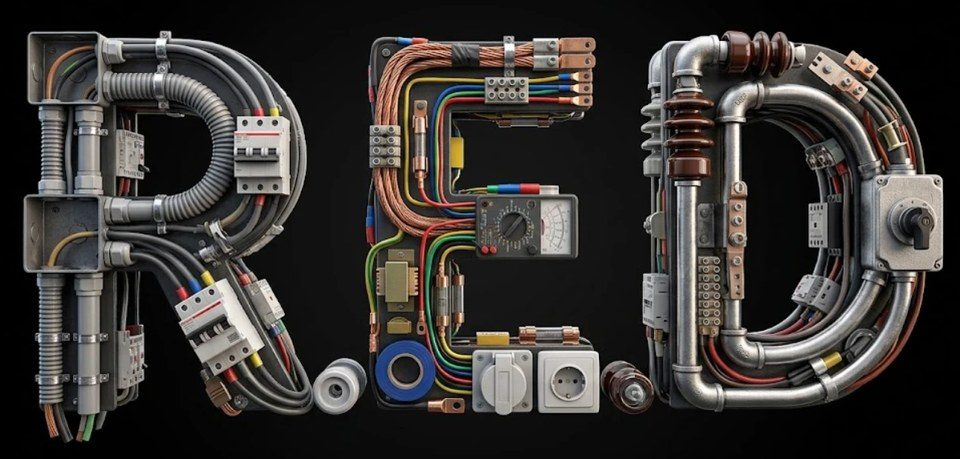

E.T. N.° 1 «Crucero ARA General Belgrano» · Tucumán
Carpeta técnica
Taller de Electricidad · 2.° año · 2026
Solo se copia lo que está en los recuadros sombreados, como este: unas 8 carillas en todo el taller.
Lo demás se lee, se mira o se resuelve con tus palabras.
¿No se abre?
- Tocá «Descargar el PDF» y abrilo desde las descargas del celular.
- Si no tenés datos o conexión, pedile la copia impresa al docente.